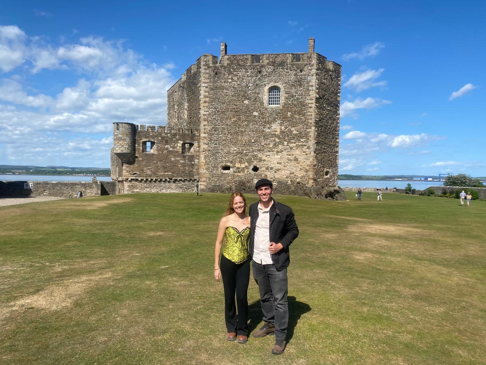
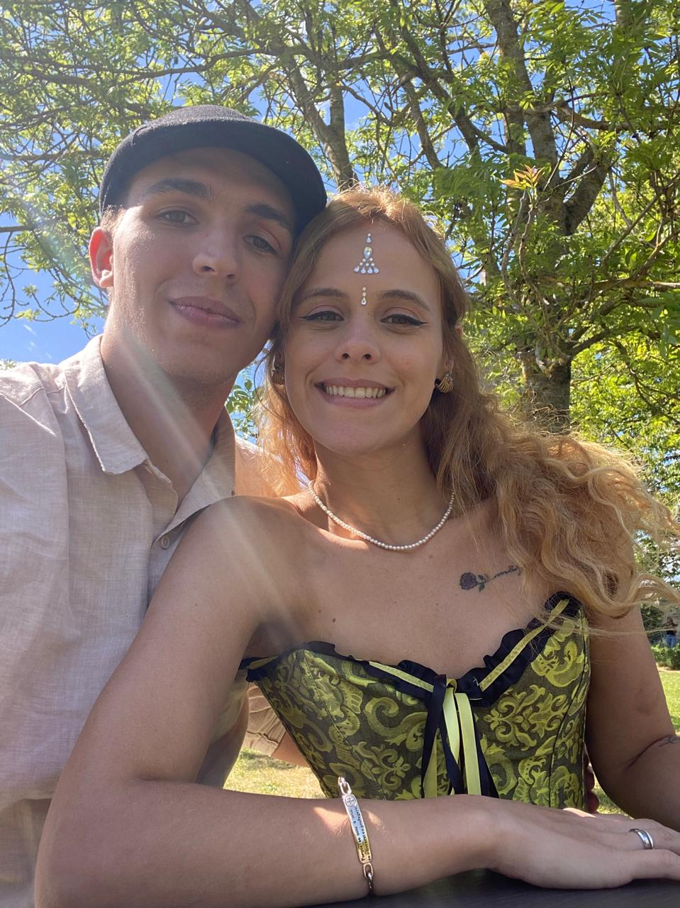
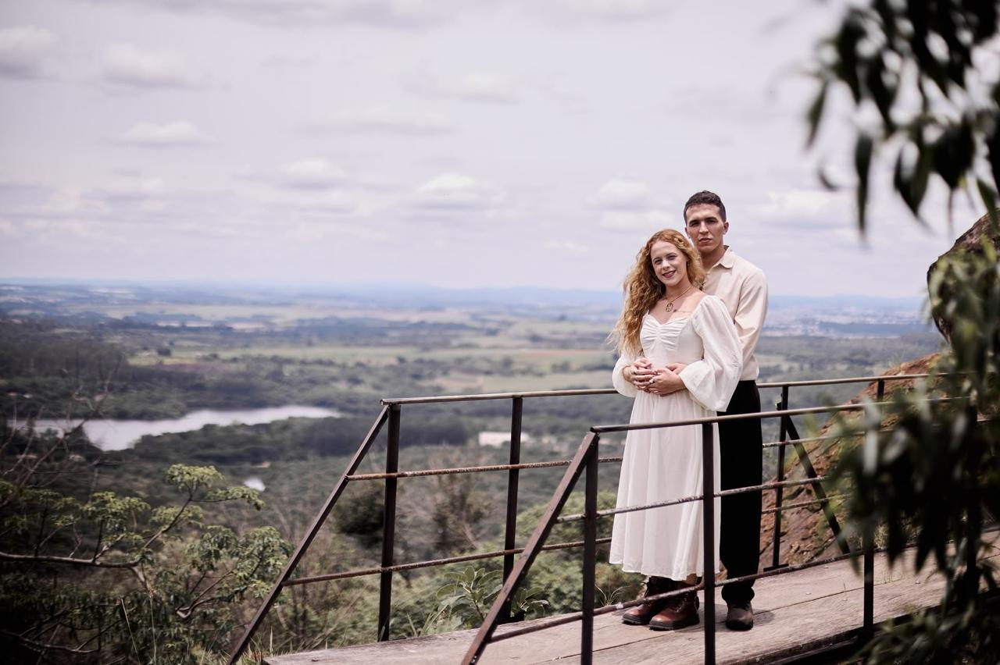
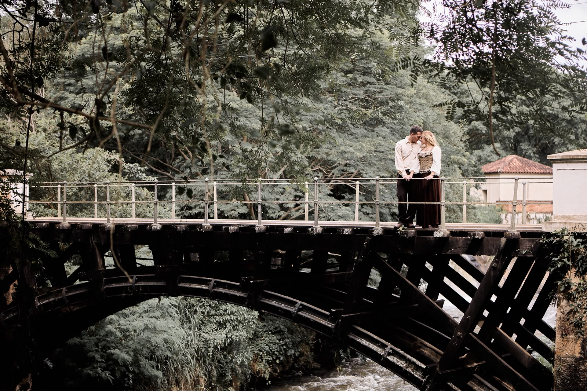
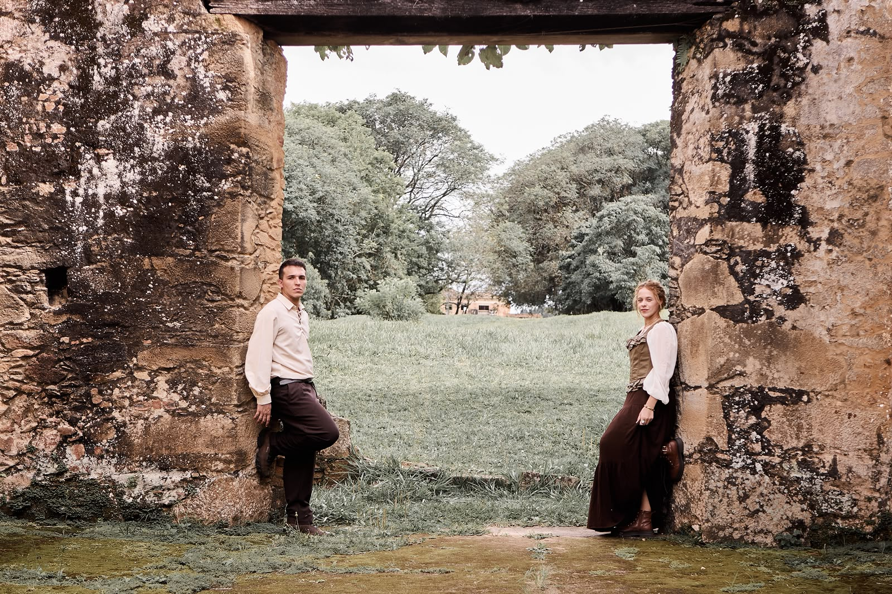
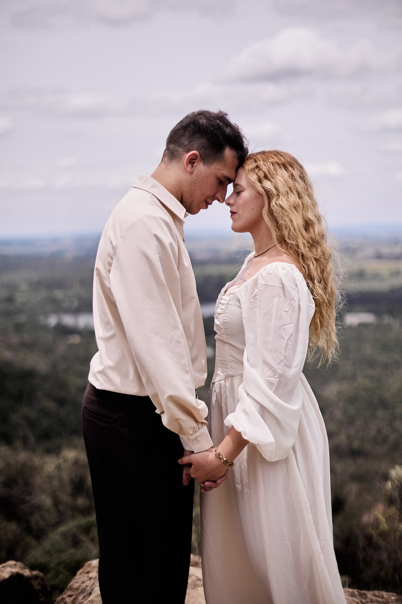
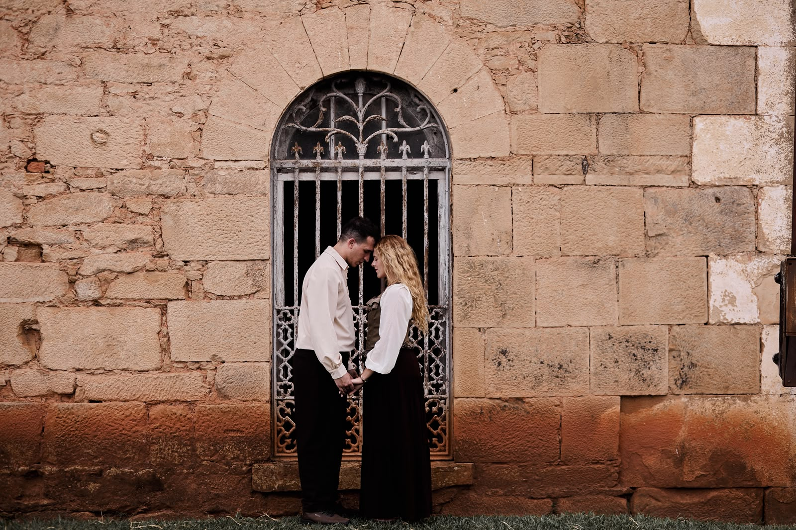
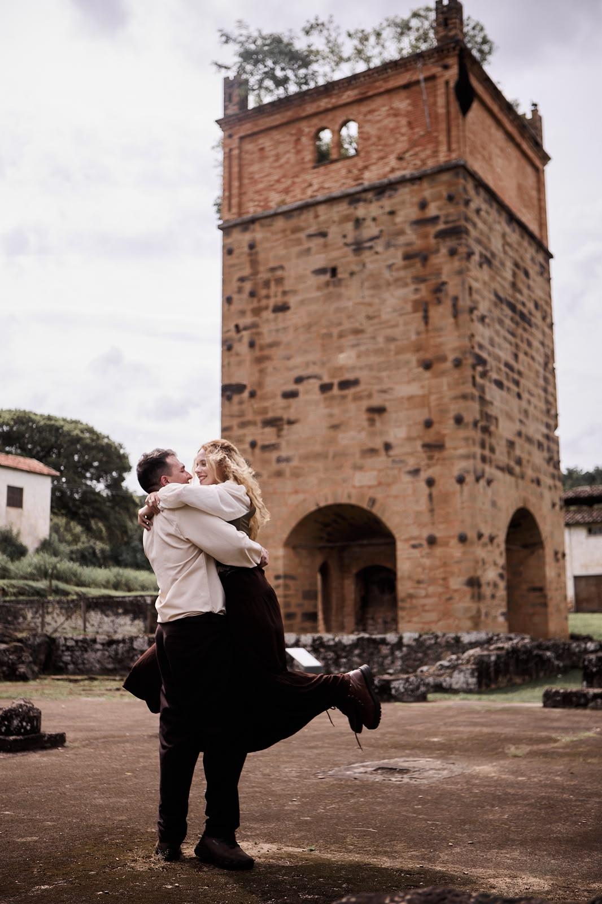

Como os nossos caminhos se cruzaram


Tudo começou em uma fila de karaokê na Tokyo, em São Paulo. Apresentados por um amigo em comum, a conexão foi instantânea. Desde aquela noite, nunca mais nos separamos — passamos a compartilhar a vida, os sorrisos e a construir um amor para a vida inteira.
Veio então a primeira grande viagem a dois! Desbravamos as paisagens da Suíça, os cenários indescritíveis da Escócia e as ruas históricas de Londres. Ali, naquelas montanhas deslumbrantes que nos fizeram sentir dentro da série Outlander, o momento mais marcante de todos estava prestes a acontecer: o Bruno se ajoelhou ao lado da mágica Ilha de Skye e fez o pedido pelas famosas Highlands.
Agora, com a bênção de Deus, selaremos a união de nossas vidas na Igreja Católica. O início do nosso tão esperado "felizes para sempre"!





